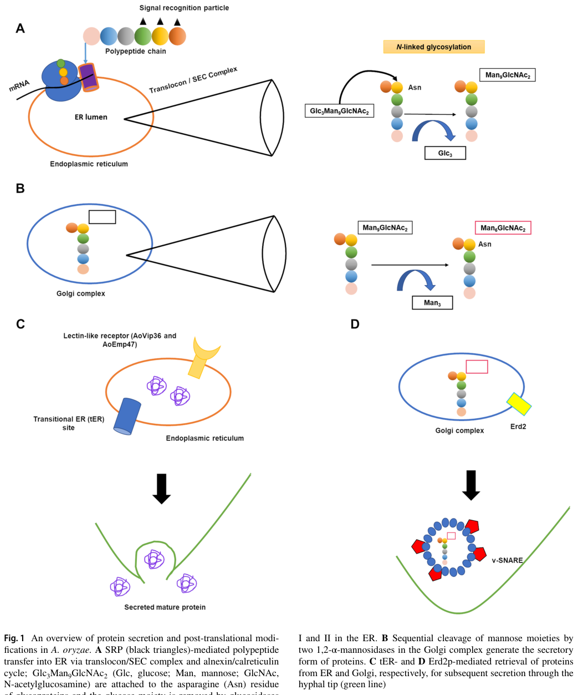

Protein disulfide-isomerase tigA (tunicamycin-inducible gene A polypeptide) is a member of the PDI family in Aspergillus niger. It contains two thioredoxin domains with redox-active CXXC motifs and a C-terminal ERp29-like domain. TigA has dual activities: it acts as a protein disulfide isomerase catalyzing the rearrangement of disulfide bonds (demonstrated by refolding of denatured/reduced RNase A), and exhibits chaperone activity (demonstrated by refolding of denatured prochymosin but not GAPDH, indicating substrate specificity). It is induced by tunicamycin treatment (ER stress) and resides in the ER lumen. It is not a trigger factor homolog; it is a bona fide PDI family member.
| GO Term | Evidence | Action | Reason |
|---|---|---|---|
|
GO:0006457
protein folding
|
IEA
GO_REF:0000118 |
ACCEPT |
Summary: TreeGrafter IEA annotation for protein folding. TigA is a PDI family member with demonstrated chaperone activity assisting protein folding (PMID:16234854). Consistent with IDA evidence for the same term.
Reason: TigA has experimentally demonstrated protein folding chaperone activity (refolding of denatured prochymosin; PMID:16234854) and PDI isomerase activity that assists protein folding. This IEA is consistent with experimental evidence.
Supporting Evidence:
PMID:16234854
TIGA also exhibited chaperone activity in the refolding of denatured prochymosin
|
|
GO:0003756
protein disulfide isomerase activity
|
IEA
GO_REF:0000120 |
ACCEPT |
Summary: Combined IEA annotation for PDI activity based on InterPro and EC number mapping. UniProt names this protein "Protein disulfide-isomerase tigA" with EC 5.3.4.1. Experimentally, TigA catalyzes refolding of denatured and reduced RNase A via disulfide isomerase activity (PMID:16234854).
Reason: This is a core molecular function of TigA. The protein belongs to the PDI family, has two thioredoxin domains with CXXC active sites, and experimentally demonstrates isomerase activity catalyzing RNase A refolding (PMID:16234854).
Supporting Evidence:
PMID:16234854
TIGA acted as an isomerase, catalyzing the refolding of denatured and reduced ribonuclease A.
file:ASPNG/tigA/tigA-deep-research-falcon.md
Protein disulfide-isomerase / thiol-disulfide oxidoreductase that catalyzes disulfide exchange reactions during oxidative folding of ER client proteins; demonstrated by RNase A refolding assay and dependence on CGHC motifs.
|
|
GO:0005783
endoplasmic reticulum
|
IEA
GO_REF:0000120 |
ACCEPT |
Summary: Combined IEA annotation for ER localization based on InterPro (ERp29 domain) and PANTHER. TigA has a signal peptide and a C-terminal KDEL ER retention signal (positions 356-359), consistent with ER lumen residence.
Reason: TigA contains a signal peptide (residues 1-19) and C-terminal ER retention motif (KDEL). UniProt annotates subcellular location as ER lumen. This is consistent with its function as a PDI in the ER. The more specific term GO:0005788 (ER lumen) is also annotated.
|
|
GO:0005788
endoplasmic reticulum lumen
|
IEA
GO_REF:0000044 |
ACCEPT |
Summary: IEA annotation for ER lumen based on UniProt subcellular location mapping. TigA has a signal peptide and C-terminal KDEL ER retention signal, placing it in the ER lumen.
Reason: Correct and more specific than GO:0005783. TigA is a soluble ER lumen protein with signal peptide and KDEL retention motif.
Supporting Evidence:
file:ASPNG/tigA/tigA-deep-research-falcon.md
ER lumen, supported by N-terminal signal peptide and C-terminal KDEL retention signal.
|
|
GO:0016853
isomerase activity
|
IEA
GO_REF:0000043 |
ACCEPT |
Summary: IEA annotation for isomerase activity from UniProt keyword mapping. This is a broad parent of the more specific GO:0003756 (protein disulfide isomerase activity).
Reason: Correct but very broad. The more specific term GO:0003756 is also annotated. Acceptable as a broad IEA.
|
|
GO:0006457
protein folding
|
IDA
PMID:16234854 Functional analysis of tunicamycin-inducible gene A polypept... |
ACCEPT |
Summary: IDA annotation for protein folding from Liang et al. (2005). The study demonstrated that TigA assists protein folding through two mechanisms: PDI isomerase activity (refolding denatured/reduced RNase A) and chaperone activity (refolding denatured prochymosin). The chaperone activity showed substrate specificity, working on prochymosin but not on GAPDH (PMID:16234854).
Reason: Direct experimental evidence for protein folding activity through both isomerase and chaperone mechanisms. This is a core biological process for TigA.
Supporting Evidence:
PMID:16234854
TIGA acted as an isomerase, catalyzing the refolding of denatured and reduced ribonuclease A. TIGA also exhibited chaperone activity in the refolding of denatured prochymosin
|
|
GO:0051082
unfolded protein binding
|
IDA
PMID:16234854 Functional analysis of tunicamycin-inducible gene A polypept... |
MODIFY |
Summary: IDA annotation for unfolded protein binding. TigA is a PDI family member with demonstrated chaperone activity -- it binds unfolded/denatured prochymosin and assists its refolding (PMID:16234854). This binding is part of its genuine chaperone function, not merely incidental interaction. GO:0051082 is proposed for obsoletion. The appropriate replacement is GO:0044183 (protein folding chaperone), which captures the functional role of TigA's binding to unfolded substrates.
Reason: GO:0051082 is proposed for obsoletion. TigA genuinely binds unfolded proteins as part of its chaperone function (PMID:16234854), assisting their refolding. This is a true protein folding chaperone activity. The appropriate replacement term is GO:0044183 (protein folding chaperone), which accurately describes the functional context of TigA's interaction with unfolded substrates. TigA is not ATP-dependent, so the non-ATP-dependent parent term is appropriate.
Proposed replacements:
protein folding chaperone
Supporting Evidence:
PMID:16234854
TIGA also exhibited chaperone activity in the refolding of denatured prochymosin but not in the refolding of glyceraldehyde 3-phosphate dehydrogenase (GAPDH), indicating that it had substrate specificity with respect to chaperone activity.
file:ASPNG/tigA/tigA-deep-research-falcon.md
Chaperone assistance demonstrated for disulfide-containing prochymosin, but not for non-disulfide GAPDH, implying selective substrate interaction and a narrower chaperone profile than canonical PDI.
|
|
GO:0034975
protein folding in endoplasmic reticulum
|
NAS
PMID:16234854 Functional analysis of tunicamycin-inducible gene A polypept... |
NEW |
Summary: New biological-process annotation to capture the ER-specific context of TigA-mediated oxidative protein folding. Existing GO annotations already capture protein folding, PDI activity, and ER lumen localization separately; the current literature synthesis supports the more specific ER protein folding process.
Reason: TigA is a PDI-family foldase/chaperone with experimentally demonstrated disulfide isomerase and substrate-selective chaperone activities, and its signal peptide plus C-terminal KDEL motif place it in the ER lumen. The field-level interpretation is therefore not just generic protein folding but folding of secretory-pathway client proteins in the ER, particularly oxidative folding of disulfide-containing substrates.
Supporting Evidence:
PMID:16234854
TIGA acted as an isomerase, catalyzing the refolding of denatured and reduced ribonuclease A. TIGA also exhibited chaperone activity in the refolding of denatured prochymosin
PMID:9256071
Current strategies to improve the secretion of heterologous proteins in Aspergillus niger include the manipulation of chaperones and foldases specific to the endoplasmic reticulum (ER).
file:ASPNG/tigA/tigA-deep-research-falcon.md
Protein disulfide-isomerase / thiol-disulfide oxidoreductase that catalyzes disulfide exchange reactions during oxidative folding of ER client proteins.
|
The research report should be a detailed narrative explaining the function, biological processes, and localization of the gene product. Citations should be given for all claims.
You should prioritize authoritative reviews and primary scientific literature when conducting research. You can supplement
this with annotations you find in gene/protein databases, but these can be outdated or inaccurate.
We are specifically interested in the primary function of the gene - for enzymes, what reaction is catalyzed, and what is the substrate specificity? For transporters, what is the substrate? For structural proteins or adapters, what is the broader structural role? For signaling molecules, what is the role in the pathway.
We are interested in where in or outside the cell the gene product carries out its function.
We are also interested in the signaling or biochemical pathways in which the gene functions. We are less interested in broad pleiotropic effects, except where these elucidate the precise role.
Include evidence where possible. We are interested in both experimental evidence as well as inference from structure, evolution, or bioinformatic analysis. Precise studies should be prioritized over high-throughput, where available.
Target verification (mandatory): The gene symbol tigA in Aspergillus niger refers to tunicamycin‑inducible gene A, encoding a protein disulfide‑isomerase (PDI) family member (often written TIGA or ERp38-like). Primary literature confirms an N‑terminal signal peptide, two CGHC active sites, and a C‑terminal KDEL ER-retention motif, aligning with the UniProt target description and PDI-family membership. (jeenes1997isolationandcharacterisation pages 2-4)
UniProt entry URL (provided context): https://www.uniprot.org/uniprotkb/Q00216
Protein disulfide isomerases are thioredoxin-superfamily enzymes that catalyze thiol–disulfide exchange reactions, enabling formation, reduction, and isomerization of disulfide bonds during folding of secreted and membrane proteins in the endoplasmic reticulum (ER). In eukaryotes, these PDI-catalyzed reactions occur in the ER in cooperation with sulfhydryl oxidases such as Ero1 and small-molecule redox buffers such as glutathione (GSH/GSSG). (palma2024komagataellaphaffiierp41 pages 1-2)
When protein folding demand exceeds ER capacity, misfolded/unfolded proteins accumulate, triggering ER stress and adaptive programs such as the UPR and related secretion stress responses. Filamentous fungi (including industrial Aspergillus spp.) couple ER folding capacity to high-level secretion, and ER folding factors (e.g., BiP and PDI-family enzymes) are routinely induced or engineered in protein-production strains. (jadhav2024proteinsecretionand pages 4-6, ngiam2000characterizationofa pages 3-4)
TigA/TIGA is a PDI-family enzyme most consistently interpreted as an ER-lumenal foldase/oxidoreductase that is stress inducible and can contribute to the folding/quality control of secretory proteins. (jeenes1997isolationandcharacterisation pages 2-4, ngiam2000characterizationofa pages 3-4)
Jeenes et al. characterized tigA as a single-copy gene with an mRNA of ~1.35 kb. (jeenes1997isolationandcharacterisation pages 2-4, jeenes1997isolationandcharacterisation pages 1-2)
Experimental sequence analysis showed TigA is synthesized as a 359 aa precursor (~38.7 kDa) with a predicted ER translocation signal peptide cleaved between aa 19–20, producing a 340 aa mature protein. (jeenes1997isolationandcharacterisation pages 2-4)
Key functional motifs/localization signals:
- Two PDI-family active sites: –CGHC– at aa 49–52 and aa 169–172. (jeenes1997isolationandcharacterisation pages 2-4)
- C-terminal ER retrieval/retention signal: –KDEL, supporting ER-lumen localization. (jeenes1997isolationandcharacterisation pages 2-4)
TigA is not a canonical “four-domain” PDI; rather, it contains two thioredoxin-like domains (a0 and a) and a helical ERp29c-like domain, and lacks the redox-inactive peptide-binding b/b′ domains characteristic of typical PDIs. This structural difference is used to explain functional specialization and reduced activity relative to canonical PDI. (liang2005functionalanalysisof pages 1-2, liang2005functionalanalysisof pages 3-4)
A complementary 2024 mechanistic study of a fungal ERp38/TigA-type protein (Komagataella Erp41) describes the same overall architecture—two thioredoxin-like domains followed by an alpha-helical ERp29_C domain—supporting the interpretation that TigA-like enzymes are specialized ER oxidoreductases within the PDI family. (palma2024komagataellaphaffiierp41 pages 1-2)
In vitro, A. niger TIGA catalyzed refolding of reduced/denatured RNase A in the presence of a glutathione redox buffer, demonstrating disulfide isomerase/foldase activity. (liang2005functionalanalysisof pages 2-3)
Relative activity: Under the reported conditions, TIGA was ~10% as active as human PDI in the RNase refolding assay. (liang2005functionalanalysisof pages 2-3)
Thioredoxin-motif mutagenesis demonstrated:
- Complete replacement of all active-site cysteines (NSSCSS) eliminated activity (0%). (liang2005functionalanalysisof pages 2-3)
- Keeping only the N-terminal CGHC motif intact (NCCCSS) retained 62.6% activity; keeping only the C-terminal motif intact (NSSCCC) retained 48.3% activity, supporting that both active sites contribute but the N-terminal motif is more active. (liang2005functionalanalysisof pages 2-3)
- Mutating the first cysteine in each motif abolished activity (NSCCSC = 0%), indicating the N-terminal cysteine of each CXXC is essential for catalysis. (liang2005functionalanalysisof pages 2-3)
TIGA also exhibited chaperone-like assistance during refolding, with substrate selectivity:
- For prochymosin (contains 3 disulfide bonds), TIGA increased refolding yield from 2% to ~13% at a 1:10 TIGA:prochymosin molar ratio. Notably, the catalytically inactive mutant NSSCSS still improved yield (to 4% at 1:10 and ~17% at equimolar), supporting a trx-independent chaperone component. (liang2005functionalanalysisof pages 2-3)
- For GAPDH (no disulfide bonds), TIGA did not improve refolding or suppress aggregation (whereas canonical PDI did), reinforcing functional specificity and implying TigA lacks canonical PDI’s broader substrate-binding capacity. (liang2005functionalanalysisof pages 3-4)
Jeenes et al. suggested (from sequence/architecture) that TigA’s active sites and lack of an acidic peptide-binding region imply a strongly oxidizing oxidoreductase with lower isomerase capacity than typical PDI—consistent with later direct assays showing reduced RNase-refolding activity vs human PDI. (jeenes1997isolationandcharacterisation pages 4-5, liang2005functionalanalysisof pages 2-3)
A signal peptide plus C-terminal KDEL strongly supports that TigA is ER lumenal and functions in the early secretory pathway. (jeenes1997isolationandcharacterisation pages 2-4)
Jeenes et al. further noted that A. niger uses HDEL for PDIA, and ligand affinity differences between HDEL and KDEL for the same receptor suggest TigA and PDIA could occupy different functional subregions along the ER-to-cis-Golgi axis. (jeenes1997isolationandcharacterisation pages 2-4)
A 2024 review figure summarizes secretion from ER → Golgi → hyphal tip, including ER entry via SRP/translocon and glycosylation/processing steps before secretion. TigA’s ER-lumen foldase activity is positioned at the earliest folding/maturation stage in this pathway. (jadhav2024proteinsecretionand media f1bc44a5)
Original characterization showed tigA is tunicamycin-inducible, with ~2–3× mRNA induction after a ~3 h lag, consistent with induction downstream of unfolding stress caused by inhibited N-glycosylation. (jeenes1997isolationandcharacterisation pages 4-5, jeenes1997isolationandcharacterisation pages 1-2)
Ngiam et al. quantified induction in A. niger AB4.1:
- 20 mM DTT: tigA mRNA increased ~4× at 40 min and ~8× at 2 h. (ngiam2000characterizationofa pages 3-4)
- A23187 (Ca2+ ionophore): tigA mRNA increased ~3.5× after 1–2 h. (ngiam2000characterizationofa pages 3-4)
Baseline relative abundance (same study): bipA transcripts were 3–4× higher than pdiA, while tigA was 3–4× lower than pdiA. (ngiam2000characterizationofa pages 3-4)
In strains overproducing hen egg white lysozyme (HEWL), transcripts of pdiA, bipA, and tigA were all elevated compared with parent strain, linking tigA expression to secretory burden. (ngiam2000characterizationofa pages 3-4)
A genome-wide secretion stress study grouped TigA with lumenal foldases (PdiA, TigA, PrpA) induced under secretion stress, while also noting stressor-specific differences (e.g., tigA not induced in one DTT condition in that dataset). (guillemette2007genomicanalysisof pages 10-12)
A 2024 Journal of Biological Chemistry study (Palma et al., received 2024-01-02, published in press 2024-02-13) characterized a fungal ERp38/TigA-type PDI-family enzyme (Erp41) with mixed PDI- and glutaredoxin-like properties and unusually fast glutathione-coupled oxidation activity, reiterating how active-site composition and GSH/GSSG coupling can tune catalytic behavior in PDI-family proteins. This provides a modern biochemical framework for interpreting why TigA-family members may differ from canonical PDIs in activity and substrate selectivity. (palma2024komagataellaphaffiierp41 pages 1-2)
A 2024 review (Jadhav et al.; online 2023, issue Jan 2024) synthesizes current understanding of filamentous-fungal secretion, ER stress, UPR, and how these constrain industrial protein production; it explicitly maps the secretion route and highlights the centrality of ER folding capacity. (jadhav2024proteinsecretionand pages 4-6, jadhav2024proteinsecretionand media f1bc44a5)
A 2024 A. niger study directly linked ER oxidative folding enzymes (PDI and ERO) to ROS formation during disulfide bond formation, and showed that engineering antioxidant/redox systems can improve protein production. Specifically, Glr1 overexpression reduced intracellular ROS by 50%, increased glucoamylase activity by 243%, and increased total protein secretion by 88%. This reinforces that ER oxidative folding (the biochemical niche of TigA) is tightly coupled to redox stress and is an actionable engineering lever. (chen2024enhancementofprotein pages 1-2)
A 2023 study on expressing the plant sweet protein monellin in A. niger (published Apr 2023) provides a concrete modern implementation of secretion engineering. It reports that A. niger can produce 25–30 g/L glucoamylase (homologous protein) while heterologous proteins can be ~70 mg/L, and that heterologous non-fungal proteins are typically ~three orders of magnitude lower than fungal proteins. After multiple interventions, the study achieved 0.284 mg/L monellin in shake flasks. The authors explicitly tested ER interventions including overexpression of ER chaperones/foldases (e.g., OEpdiA and OEbipA) and attenuation of ERAD (ΔhrdC) as part of the engineering strategy set, illustrating ongoing real-world use of ER folding factors (the same functional space as TigA) to address secretion bottlenecks. (li2023explorationofthe pages 1-2, li2023explorationofthe pages 2-4)
Aspergillus niger is a major industrial “cell factory” for secreted enzymes and food-grade proteins. Modern strain engineering repeatedly targets ER folding, stress responses (UPR/ERAD), and redox management—because oxidative folding is required for many secreted proteins and can become rate-limiting or stress-inducing. (jadhav2024proteinsecretionand pages 4-6, chen2024enhancementofprotein pages 1-2)
Direct evidence for industrial manipulations is stronger for pdiA than tigA in the retrieved corpus; however, tigA is clearly an ER-stress responsive foldase/chaperone whose expression rises with ER perturbation and heterologous secretion load, suggesting it is a plausible engineering target or biomarker for secretion stress. (ngiam2000characterizationofa pages 3-4)
Two contemporary implementations highlight how TigA-relevant biology is deployed:
1) Redox/ROS engineering to reduce oxidative-folding-associated stress while increasing secretion output (Glr1 overexpression improving secretion). (chen2024enhancementofprotein pages 1-2)
2) ER folding and quality-control engineering (UPR/ERAD/chaperones such as PDI and BiP) to increase yields of hard-to-express heterologous proteins in A. niger. (li2023explorationofthe pages 2-4)
Protein disulfide-isomerase / thiol–disulfide oxidoreductase that catalyzes disulfide exchange reactions during oxidative folding of ER client proteins; demonstrated by RNase A refolding assay and dependence on CGHC motifs. (liang2005functionalanalysisof pages 2-3)
ER lumen, supported by N-terminal signal peptide and C-terminal KDEL retention signal. (jeenes1997isolationandcharacterisation pages 2-4)
| Claim/Finding | Evidence type (biochemical/genetic/transcriptional/review) | Quantitative details | Source (first author year, journal) | URL/DOI |
|---|---|---|---|---|
| Identity and architecture of A. niger tigA/TIGA (UniProt Q00216) match an ER PDI-family protein | Genetic/sequence | ORF encodes 359 aa precursor (~38.7 kDa), predicted signal peptide cleavage between aa 19–20, mature protein 340 aa; two CGHC active-site motifs at aa 49–52 and 169–172; C-terminal KDEL ER-retention signal; transcript ~1.35 kb; single-copy gene (jeenes1997isolationandcharacterisation pages 2-4, jeenes1997isolationandcharacterisation pages 1-2) | Jeenes 1997, Gene; Liang 2005, Biochemistry and Cell Biology | https://doi.org/10.1016/S0378-1119(97)00098-X ; https://doi.org/10.1139/O05-117 |
| Domain organization is atypical relative to canonical PDI | Sequence/biochemical | TIGA contains two thioredoxin-like domains (a0 and a) plus a helical ERp29c-like D domain; lacks the redox-inactive b/b' domains of canonical PDI and shares only ~20% sequence identity with PDI (liang2005functionalanalysisof pages 1-2, liang2005functionalanalysisof pages 3-4) | Liang 2005, Biochemistry and Cell Biology | https://doi.org/10.1139/O05-117 |
| Localization is most consistent with the ER lumen / early secretory pathway | Genetic/inferential | Evidence includes N-terminal signal peptide plus C-terminal KDEL; authors conclude TigA is likely ER-lumenal and may operate at different sites within the ER-to-cis-Golgi network than HDEL-bearing PDIA (jeenes1997isolationandcharacterisation pages 2-4) | Jeenes 1997, Gene | https://doi.org/10.1016/S0378-1119(97)00098-X |
| TIGA is a bona fide disulfide isomerase/foldase | Biochemical | Promotes refolding of reduced, denatured RNase A in glutathione redox buffer; activity is ~10% of human PDI under assay conditions (liang2005functionalanalysisof pages 2-3, liang2005functionalanalysisof pages 1-2) | Liang 2005, Biochemistry and Cell Biology | https://doi.org/10.1139/O05-117 |
| Catalysis depends on the two thioredoxin motifs, with unequal contributions | Biochemical/mutagenesis | Wild type = 100% activity; NCCCSS (only N-terminal motif intact) = 62.6%; NSSCCC (only C-terminal motif intact) = 48.3%; NCSCCS (second cysteines mutated) = 7.4%; NSSCSS and NSCCSC = 0%. Conclusion: N-terminal motif more active; the first cysteine in each motif is essential (liang2005functionalanalysisof pages 2-3, liang2005functionalanalysisof pages 1-2) | Liang 2005, Biochemistry and Cell Biology | https://doi.org/10.1139/O05-117 |
| TIGA has chaperone activity, but it is substrate selective | Biochemical | In prochymosin refolding, TIGA increased yield from 2% to ~13% at 1:10 TIGA:prochymosin molar ratio; inactive mutant NSSCSS still improved yield to 4% at 1:10 and ~17% at equimolar ratio, indicating a trx-independent chaperone component (liang2005functionalanalysisof pages 2-3) | Liang 2005, Biochemistry and Cell Biology | https://doi.org/10.1139/O05-117 |
| Chaperone function is not universal across substrates | Biochemical | TIGA promoted refolding of disulfide-containing prochymosin but did not improve reactivation or suppress aggregation of GAPDH (a non-disulfide substrate), unlike canonical PDI; this supports substrate specificity (liang2005functionalanalysisof pages 1-2, liang2005functionalanalysisof pages 3-4) | Liang 2005, Biochemistry and Cell Biology | https://doi.org/10.1139/O05-117 |
| Early interpretation suggested stronger oxidoreductase/oxidase-like than high-isomerase behavior | Sequence/inference | Jeenes et al. noted the active-site composition suggested a strongly oxidizing oxidoreductase and the lack of an acidic peptide-binding region argued against high isomerase activity, consistent with later biochemical observation that TigA is weaker than canonical PDI in RNase refolding (jeenes1997isolationandcharacterisation pages 4-5, jeenes1997isolationandcharacterisation pages 2-4) | Jeenes 1997, Gene | https://doi.org/10.1016/S0378-1119(97)00098-X |
| tigA is ER-stress responsive to tunicamycin | Transcriptional | ~2–3-fold mRNA induction after a ~3 h lag following tunicamycin treatment; promoter contains an ERPTRE-like element (~70% identity to mammalian ERp72 ERPTRE) and a grp-core-like element (~75% identity), supporting secretion-stress regulation (jeenes1997isolationandcharacterisation pages 4-5, jeenes1997isolationandcharacterisation pages 2-4, jeenes1997isolationandcharacterisation pages 1-2) | Jeenes 1997, Gene | https://doi.org/10.1016/S0378-1119(97)00098-X |
| tigA is strongly induced by reductive ER stress (DTT) | Transcriptional | In A. niger AB4.1, 20 mM DTT increased tigA mRNA ~4-fold at 40 min and ~8-fold at 2 h; bipA induction was larger, and tigA transcript abundance was ~3–4-fold lower than pdiA at baseline (ngiam2000characterizationofa pages 3-4) | Ngiam 2000, Applied and Environmental Microbiology | https://doi.org/10.1128/AEM.66.2.775-782.2000 |
| tigA responds to Ca2+-homeostasis perturbation (A23187) | Transcriptional | A23187 caused tigA mRNA to increase ~3.5-fold after 1–2 h in A. niger; pdiA response was weaker and bipA rose ~6.3-fold before declining (ngiam2000characterizationofa pages 3-4) | Ngiam 2000, Applied and Environmental Microbiology | https://doi.org/10.1128/AEM.66.2.775-782.2000 |
| tigA is linked to secretion stress and heterologous protein production | Transcriptional/genetic | In HEWL-overproducing A. niger strains, mRNA levels of tigA, pdiA, and bipA were all higher than in parent strain AB4.1, connecting tigA to secretory load adaptation (ngiam2000characterizationofa pages 3-4) | Ngiam 2000, Applied and Environmental Microbiology | https://doi.org/10.1128/AEM.66.2.775-782.2000 |
| Genome-scale secretion-stress profiling places tigA among induced ER foldases | Transcriptomics | In A. niger secretion stress/UPR studies, TigA is grouped with lumenal foldases (PdiA, TigA, PrpA); all were generally up-regulated by secretion stressors except tigA was not induced in one DTT condition in the GeneChip dataset, underscoring stressor-specific regulation (guillemette2007genomicanalysisof pages 10-12) | Guillemette 2007, BMC Genomics | https://doi.org/10.1186/1471-2164-8-158 |
| Role in the broader ER oxidative folding pathway is well supported by recent reviews | Review | Recent fungal secretion reviews place PDI-family proteins in the ER folding network that converts nascent secretory proteins to native form before Golgi trafficking; Fig. 1 in the 2024 review summarizes the ER→Golgi secretory route in filamentous fungi (jadhav2024proteinsecretionand pages 4-6, jadhav2024proteinsecretionand media f1bc44a5) | Jadhav 2024, Applied Microbiology and Biotechnology | https://doi.org/10.1007/s00253-023-12985-4 |
| Recent mechanistic work on fungal ERp38/ERp29-like proteins supports TigA-family functional interpretation | Biochemical/comparative | A 2024 study on Komagataella phaffii Erp41 describes an ER-resident fungal ERp38/TigA-type PDI-family protein with two thioredoxin-like domains plus an ERp29_C domain, reinforcing current understanding of TigA-like proteins as specialized ER oxidoreductases rather than canonical PDI equivalents (palma2024komagataellaphaffiierp41 pages 11-12, palma2024komagataellaphaffiierp41 pages 1-2) | Palma 2024, Journal of Biological Chemistry | https://doi.org/10.1016/j.jbc.2024.105746 |
| Industrial relevance: ER folding/redox remains a bottleneck in A. niger protein production | Review/engineering | A. niger is a major secretion host, but heterologous non-fungal proteins often yield ~three orders of magnitude less than fungal proteins; one 2023 monellin study achieved only 0.284 mg/L in shake flasks after multi-pronged engineering, illustrating persistent ER/secretion bottlenecks (li2023explorationofthe pages 1-2, li2023explorationofthe pages 2-4) | Li 2023, Journal of Fungi | https://doi.org/10.3390/jof9050528 |
| Industrial relevance: helper folding pathways are directly engineered in A. niger | Engineering | The monellin study explicitly tested overexpression of pdiA and bipA, ERAD attenuation (ΔhrdC), copy-number increase, protease deletion, and membrane engineering; although TigA was not directly manipulated, the work shows PDI-family folding helpers remain central engineering targets (li2023explorationofthea pages 2-4, li2023explorationofthe pages 2-4, li2023explorationofthea pages 16-17) | Li 2023, Journal of Fungi | https://doi.org/10.3390/jof9050528 |
| Industrial relevance: redox engineering can improve secretion without directly editing tigA | Engineering | In 2024 A. niger, Glr1 overexpression reduced intracellular ROS by 50%, increased glucoamylase activity by 243%, and increased total protein secretion by 88%; authors explicitly link ROS generation to ER oxidative folding by PDI/ERO, highlighting the pathway context in which TigA likely acts (chen2024enhancementofprotein pages 1-2) | Chen 2024, Biotechnology for Biofuels and Bioproducts | https://doi.org/10.1186/s13068-024-02542-0 |
Table: This table compiles the main evidence for Aspergillus niger tigA/TIGA, including protein architecture, ER localization, biochemical activity, stress regulation, and relevance to secretion engineering. It is useful as a quick-reference map from primary experiments and recent reviews to the specific claims made about this protein.
References
(jeenes1997isolationandcharacterisation pages 2-4): D. Jeenes, R. Pfaller, and David B. Archer. Isolation and characterisation of a novel stress-inducible pdi-family gene from aspergillus niger. Gene, 193 2:151-6, Jul 1997. URL: https://doi.org/10.1016/s0378-1119(97)00098-x, doi:10.1016/s0378-1119(97)00098-x. This article has 58 citations and is from a peer-reviewed journal.
(palma2024komagataellaphaffiierp41 pages 1-2): Arianna Palma, Lukas A. Rettenbacher, Antti Moilanen, Mirva Saaranen, Brigitte Gasser, and Lloyd W. Ruddock. Komagataella phaffii erp41 is a protein disulfide isomerase with unprecedented disulfide bond catalyzing activity when coupled to glutathione. Journal of Biological Chemistry, 300:105746, Mar 2024. URL: https://doi.org/10.1016/j.jbc.2024.105746, doi:10.1016/j.jbc.2024.105746. This article has 3 citations and is from a domain leading peer-reviewed journal.
(jadhav2024proteinsecretionand pages 4-6): Reshma Jadhav, Robert L Mach, and Astrid R Mach-Aigner. Protein secretion and associated stress in industrially employed filamentous fungi. Applied Microbiology and Biotechnology, Jan 2024. URL: https://doi.org/10.1007/s00253-023-12985-4, doi:10.1007/s00253-023-12985-4. This article has 27 citations and is from a domain leading peer-reviewed journal.
(ngiam2000characterizationofa pages 3-4): Celina Ngiam, David J. Jeenes, Peter J. Punt, Cees A. M. J. J. Van Den Hondel, and David B. Archer. Characterization of a foldase, protein disulfide isomerase a, in the protein secretory pathway ofaspergillus niger. Applied and Environmental Microbiology, 66:775-782, Feb 2000. URL: https://doi.org/10.1128/aem.66.2.775-782.2000, doi:10.1128/aem.66.2.775-782.2000. This article has 132 citations and is from a peer-reviewed journal.
(jeenes1997isolationandcharacterisation pages 1-2): D. Jeenes, R. Pfaller, and David B. Archer. Isolation and characterisation of a novel stress-inducible pdi-family gene from aspergillus niger. Gene, 193 2:151-6, Jul 1997. URL: https://doi.org/10.1016/s0378-1119(97)00098-x, doi:10.1016/s0378-1119(97)00098-x. This article has 58 citations and is from a peer-reviewed journal.
(liang2005functionalanalysisof pages 1-2): Yurong Liang, Wei Li, Qing Ma, and Yuying Zhang. Functional analysis of tunicamycin-inducible gene a polypeptide from aspergillus niger. Biochemistry and cell biology = Biochimie et biologie cellulaire, 83 5:654-8, Oct 2005. URL: https://doi.org/10.1139/o05-117, doi:10.1139/o05-117. This article has 3 citations.
(liang2005functionalanalysisof pages 3-4): Yurong Liang, Wei Li, Qing Ma, and Yuying Zhang. Functional analysis of tunicamycin-inducible gene a polypeptide from aspergillus niger. Biochemistry and cell biology = Biochimie et biologie cellulaire, 83 5:654-8, Oct 2005. URL: https://doi.org/10.1139/o05-117, doi:10.1139/o05-117. This article has 3 citations.
(liang2005functionalanalysisof pages 2-3): Yurong Liang, Wei Li, Qing Ma, and Yuying Zhang. Functional analysis of tunicamycin-inducible gene a polypeptide from aspergillus niger. Biochemistry and cell biology = Biochimie et biologie cellulaire, 83 5:654-8, Oct 2005. URL: https://doi.org/10.1139/o05-117, doi:10.1139/o05-117. This article has 3 citations.
(jeenes1997isolationandcharacterisation pages 4-5): D. Jeenes, R. Pfaller, and David B. Archer. Isolation and characterisation of a novel stress-inducible pdi-family gene from aspergillus niger. Gene, 193 2:151-6, Jul 1997. URL: https://doi.org/10.1016/s0378-1119(97)00098-x, doi:10.1016/s0378-1119(97)00098-x. This article has 58 citations and is from a peer-reviewed journal.
(jadhav2024proteinsecretionand media f1bc44a5): Reshma Jadhav, Robert L Mach, and Astrid R Mach-Aigner. Protein secretion and associated stress in industrially employed filamentous fungi. Applied Microbiology and Biotechnology, Jan 2024. URL: https://doi.org/10.1007/s00253-023-12985-4, doi:10.1007/s00253-023-12985-4. This article has 27 citations and is from a domain leading peer-reviewed journal.
(guillemette2007genomicanalysisof pages 10-12): Thomas Guillemette, Noël NME van Peij, Theo Goosen, Karin Lanthaler, Geoffrey D Robson, Cees AMJJ van den Hondel, Hein Stam, and David B Archer. Genomic analysis of the secretion stress response in the enzyme-producing cell factory aspergillus niger. BMC Genomics, 8:158-158, Jun 2007. URL: https://doi.org/10.1186/1471-2164-8-158, doi:10.1186/1471-2164-8-158. This article has 192 citations and is from a peer-reviewed journal.
(chen2024enhancementofprotein pages 1-2): Xin Chen, Baoxiang Pan, Leyi Yu, Bin Wang, and Li Pan. Enhancement of protein production in aspergillus niger by engineering the antioxidant defense metabolism. Biotechnology for Biofuels and Bioproducts, Jun 2024. URL: https://doi.org/10.1186/s13068-024-02542-0, doi:10.1186/s13068-024-02542-0. This article has 16 citations and is from a domain leading peer-reviewed journal.
(li2023explorationofthe pages 1-2): Ke Li, Junwei Zheng, Leyi Yu, Bin Wang, and Li Pan. Exploration of the strategy for improving the expression of heterologous sweet protein monellin in aspergillus niger. Journal of Fungi, 9:528, Apr 2023. URL: https://doi.org/10.3390/jof9050528, doi:10.3390/jof9050528. This article has 26 citations.
(li2023explorationofthe pages 2-4): Ke Li, Junwei Zheng, Leyi Yu, Bin Wang, and Li Pan. Exploration of the strategy for improving the expression of heterologous sweet protein monellin in aspergillus niger. Journal of Fungi, 9:528, Apr 2023. URL: https://doi.org/10.3390/jof9050528, doi:10.3390/jof9050528. This article has 26 citations.
(palma2024komagataellaphaffiierp41 pages 11-12): Arianna Palma, Lukas A. Rettenbacher, Antti Moilanen, Mirva Saaranen, Brigitte Gasser, and Lloyd W. Ruddock. Komagataella phaffii erp41 is a protein disulfide isomerase with unprecedented disulfide bond catalyzing activity when coupled to glutathione. Journal of Biological Chemistry, 300:105746, Mar 2024. URL: https://doi.org/10.1016/j.jbc.2024.105746, doi:10.1016/j.jbc.2024.105746. This article has 3 citations and is from a domain leading peer-reviewed journal.
(li2023explorationofthea pages 2-4): K Li, J Zheng, L Yu, B Wang, and L Pan. Exploration of the strategy for improving the expression of heterologous sweet protein monellin in aspergillus niger. j fungi 2023; 9: 528. Unknown journal, 2023.
(li2023explorationofthea pages 16-17): K Li, J Zheng, L Yu, B Wang, and L Pan. Exploration of the strategy for improving the expression of heterologous sweet protein monellin in aspergillus niger. j fungi 2023; 9: 528. Unknown journal, 2023.

id: Q00216
gene_symbol: tigA
product_type: PROTEIN
status: IN_PROGRESS
taxon:
id: NCBITaxon:5061
label: Aspergillus niger
description: >-
Protein disulfide-isomerase tigA (tunicamycin-inducible gene A polypeptide) is a member
of the PDI family in Aspergillus niger. It contains two thioredoxin domains with redox-active
CXXC motifs and a C-terminal ERp29-like domain. TigA has dual activities: it acts as a protein
disulfide isomerase catalyzing the rearrangement of disulfide bonds (demonstrated by refolding
of denatured/reduced RNase A), and exhibits chaperone activity (demonstrated by refolding of
denatured prochymosin but not GAPDH, indicating substrate specificity). It is induced by
tunicamycin treatment (ER stress) and resides in the ER lumen. It is not a trigger factor
homolog; it is a bona fide PDI family member.
existing_annotations:
- term:
id: GO:0006457
label: protein folding
evidence_type: IEA
original_reference_id: GO_REF:0000118
review:
summary: >-
TreeGrafter IEA annotation for protein folding. TigA is a PDI family member with
demonstrated chaperone activity assisting protein folding (PMID:16234854). Consistent
with IDA evidence for the same term.
action: ACCEPT
reason: >-
TigA has experimentally demonstrated protein folding chaperone activity
(refolding of denatured prochymosin; PMID:16234854) and PDI isomerase activity
that assists protein folding. This IEA is consistent with experimental evidence.
supported_by:
- reference_id: PMID:16234854
supporting_text: "TIGA also exhibited chaperone activity in the refolding of denatured prochymosin"
- term:
id: GO:0003756
label: protein disulfide isomerase activity
evidence_type: IEA
original_reference_id: GO_REF:0000120
review:
summary: >-
Combined IEA annotation for PDI activity based on InterPro and EC number mapping.
UniProt names this protein "Protein disulfide-isomerase tigA" with EC 5.3.4.1.
Experimentally, TigA catalyzes refolding of denatured and reduced RNase A via
disulfide isomerase activity (PMID:16234854).
action: ACCEPT
reason: >-
This is a core molecular function of TigA. The protein belongs to the PDI family,
has two thioredoxin domains with CXXC active sites, and experimentally demonstrates
isomerase activity catalyzing RNase A refolding (PMID:16234854).
additional_reference_ids:
- file:ASPNG/tigA/tigA-deep-research-falcon.md
supported_by:
- reference_id: PMID:16234854
supporting_text: "TIGA acted as an isomerase, catalyzing the refolding of denatured and reduced ribonuclease A."
- reference_id: file:ASPNG/tigA/tigA-deep-research-falcon.md
supporting_text: >-
Protein disulfide-isomerase / thiol-disulfide oxidoreductase that catalyzes
disulfide exchange reactions during oxidative folding of ER client proteins;
demonstrated by RNase A refolding assay and dependence on CGHC motifs.
- term:
id: GO:0005783
label: endoplasmic reticulum
evidence_type: IEA
original_reference_id: GO_REF:0000120
review:
summary: >-
Combined IEA annotation for ER localization based on InterPro (ERp29 domain) and
PANTHER. TigA has a signal peptide and a C-terminal KDEL ER retention signal
(positions 356-359), consistent with ER lumen residence.
action: ACCEPT
reason: >-
TigA contains a signal peptide (residues 1-19) and C-terminal ER retention motif
(KDEL). UniProt annotates subcellular location as ER lumen. This is consistent
with its function as a PDI in the ER. The more specific term GO:0005788 (ER lumen)
is also annotated.
- term:
id: GO:0005788
label: endoplasmic reticulum lumen
evidence_type: IEA
original_reference_id: GO_REF:0000044
review:
summary: >-
IEA annotation for ER lumen based on UniProt subcellular location mapping. TigA
has a signal peptide and C-terminal KDEL ER retention signal, placing it in the
ER lumen.
action: ACCEPT
reason: >-
Correct and more specific than GO:0005783. TigA is a soluble ER lumen protein
with signal peptide and KDEL retention motif.
additional_reference_ids:
- file:ASPNG/tigA/tigA-deep-research-falcon.md
supported_by:
- reference_id: file:ASPNG/tigA/tigA-deep-research-falcon.md
supporting_text: >-
ER lumen, supported by N-terminal signal peptide and C-terminal KDEL
retention signal.
- term:
id: GO:0016853
label: isomerase activity
evidence_type: IEA
original_reference_id: GO_REF:0000043
review:
summary: >-
IEA annotation for isomerase activity from UniProt keyword mapping. This is a
broad parent of the more specific GO:0003756 (protein disulfide isomerase activity).
action: ACCEPT
reason: >-
Correct but very broad. The more specific term GO:0003756 is also annotated.
Acceptable as a broad IEA.
- term:
id: GO:0006457
label: protein folding
evidence_type: IDA
original_reference_id: PMID:16234854
review:
summary: >-
IDA annotation for protein folding from Liang et al. (2005). The study demonstrated
that TigA assists protein folding through two mechanisms: PDI isomerase activity
(refolding denatured/reduced RNase A) and chaperone activity (refolding denatured
prochymosin). The chaperone activity showed substrate specificity, working on
prochymosin but not on GAPDH (PMID:16234854).
action: ACCEPT
reason: >-
Direct experimental evidence for protein folding activity through both isomerase
and chaperone mechanisms. This is a core biological process for TigA.
supported_by:
- reference_id: PMID:16234854
supporting_text: "TIGA acted as an isomerase, catalyzing the refolding of denatured and reduced ribonuclease A. TIGA also exhibited chaperone activity in the refolding of denatured prochymosin"
- term:
id: GO:0051082
label: unfolded protein binding
evidence_type: IDA
original_reference_id: PMID:16234854
review:
summary: >-
IDA annotation for unfolded protein binding. TigA is a PDI family member with
demonstrated chaperone activity -- it binds unfolded/denatured prochymosin and
assists its refolding (PMID:16234854). This binding is part of its genuine
chaperone function, not merely incidental interaction. GO:0051082 is proposed
for obsoletion. The appropriate replacement is GO:0044183 (protein folding chaperone),
which captures the functional role of TigA's binding to unfolded substrates.
action: MODIFY
reason: >-
GO:0051082 is proposed for obsoletion. TigA genuinely binds unfolded proteins
as part of its chaperone function (PMID:16234854), assisting their refolding.
This is a true protein folding chaperone activity. The appropriate replacement
term is GO:0044183 (protein folding chaperone), which accurately describes the
functional context of TigA's interaction with unfolded substrates. TigA is not
ATP-dependent, so the non-ATP-dependent parent term is appropriate.
proposed_replacement_terms:
- id: GO:0044183
label: protein folding chaperone
additional_reference_ids:
- file:ASPNG/tigA/tigA-deep-research-falcon.md
supported_by:
- reference_id: PMID:16234854
supporting_text: "TIGA also exhibited chaperone activity in the refolding of denatured prochymosin but not in the refolding of glyceraldehyde 3-phosphate dehydrogenase (GAPDH), indicating that it had substrate specificity with respect to chaperone activity."
- reference_id: file:ASPNG/tigA/tigA-deep-research-falcon.md
supporting_text: >-
Chaperone assistance demonstrated for disulfide-containing prochymosin, but
not for non-disulfide GAPDH, implying selective substrate interaction and a
narrower chaperone profile than canonical PDI.
- term:
id: GO:0034975
label: protein folding in endoplasmic reticulum
evidence_type: NAS
original_reference_id: PMID:16234854
review:
summary: >-
New biological-process annotation to capture the ER-specific context of
TigA-mediated oxidative protein folding. Existing GO annotations already
capture protein folding, PDI activity, and ER lumen localization separately;
the current literature synthesis supports the more specific ER protein
folding process.
action: NEW
reason: >-
TigA is a PDI-family foldase/chaperone with experimentally demonstrated
disulfide isomerase and substrate-selective chaperone activities, and its
signal peptide plus C-terminal KDEL motif place it in the ER lumen. The
field-level interpretation is therefore not just generic protein folding
but folding of secretory-pathway client proteins in the ER, particularly
oxidative folding of disulfide-containing substrates.
additional_reference_ids:
- PMID:9256071
- file:ASPNG/tigA/tigA-deep-research-falcon.md
supported_by:
- reference_id: PMID:16234854
supporting_text: >-
TIGA acted as an isomerase, catalyzing the refolding of denatured and reduced
ribonuclease A. TIGA also exhibited chaperone activity in the refolding of
denatured prochymosin
- reference_id: PMID:9256071
supporting_text: >-
Current strategies to improve the secretion of heterologous proteins in
Aspergillus niger include the manipulation of chaperones and foldases specific
to the endoplasmic reticulum (ER).
- reference_id: file:ASPNG/tigA/tigA-deep-research-falcon.md
supporting_text: >-
Protein disulfide-isomerase / thiol-disulfide oxidoreductase that catalyzes
disulfide exchange reactions during oxidative folding of ER client proteins.
references:
- id: GO_REF:0000043
title: Gene Ontology annotation based on UniProtKB/Swiss-Prot keyword mapping
findings: []
- id: GO_REF:0000044
title: Gene Ontology annotation based on UniProtKB/Swiss-Prot Subcellular Location
vocabulary mapping, accompanied by conservative changes to GO terms applied by
UniProt
findings: []
- id: GO_REF:0000118
title: TreeGrafter-generated GO annotations
findings: []
- id: GO_REF:0000120
title: Combined Automated Annotation using Multiple IEA Methods
findings: []
- id: PMID:9256071
title: Isolation and characterisation of a novel stress-inducible PDI-family gene
from Aspergillus niger.
findings: []
- id: PMID:16234854
title: Functional analysis of tunicamycin-inducible gene A polypeptide from Aspergillus
niger.
findings:
- statement: TigA has PDI isomerase activity (refolding RNase A)
supporting_text: "TIGA acted as an isomerase, catalyzing the refolding of denatured and reduced ribonuclease A."
- statement: TigA has chaperone activity (refolding prochymosin but not GAPDH)
supporting_text: "TIGA also exhibited chaperone activity in the refolding of denatured prochymosin but not in the refolding of glyceraldehyde 3-phosphate dehydrogenase (GAPDH), indicating that it had substrate specificity with respect to chaperone activity."
- statement: N-terminal thioredoxin motif is more active than C-terminal
supporting_text: "The N-terminal trx-motif was more active than the C-terminal trx-motif"
- statement: First cysteine in each CXXC motif is necessary for isomerase activity
supporting_text: "the first cysteine in each trx-motif was necessary for isomerase activity."
- id: file:ASPNG/tigA/tigA-deep-research-falcon.md
title: Deep research report on tigA (Falcon/Edison Scientific Literature)
findings:
- statement: A PDI-family ER disulfide isomerase (EC 5.3.4.1) in Aspergillus niger with two thioredoxin-like active-site CGHC motifs and a KDEL ER-retention signal; catalyzes disulfide bond rearrangement in secretory client proteins in the ER lumen; not a trigger factor homolog.
core_functions:
- description: >-
Protein disulfide isomerase that catalyzes the rearrangement of disulfide bonds
in substrate proteins, assisting their folding in the ER lumen.
molecular_function:
id: GO:0003756
label: protein disulfide isomerase activity
directly_involved_in:
- id: GO:0034975
label: protein folding in endoplasmic reticulum
locations:
- id: GO:0005788
label: endoplasmic reticulum lumen
- description: >-
Protein folding chaperone with substrate-specific activity. Assists refolding of
denatured prochymosin through a chaperone mechanism independent of its PDI activity.
molecular_function:
id: GO:0044183
label: protein folding chaperone
directly_involved_in:
- id: GO:0034975
label: protein folding in endoplasmic reticulum
locations:
- id: GO:0005788
label: endoplasmic reticulum lumen
{kind=link}